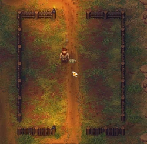
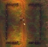

Fence supplies For Garden
| This article is a stub. You can help Graveyard Keeper Wiki by expanding it. |
| Fence supplies For Garden | |
|---|---|
 | |
Basic information
| |
Required Technology :
|
Talk with the inquisitor |
Rotatable :
|
False |
Location(s)
| |
| Witch Hill | |

This appears in the Marquis' quest, and once built unlocks the Camp bed technology, which permits the aristocrat refugees to grow their own food. Combined with the Cook in her kitchen, this will provide a continuous free food supply.
Cost
| Icon | Materials Required | Satisfaction | Notes |
|---|---|---|---|
 |
24× Flitch 12× Wood billet |
2× Refugee Happiness |
Working the Tent
- First you have to open the church.
- Once you sleep, the Marquis will bring you to the Refugee camp.
- Build your first Tent and Well and you are able to build it.
- Once you build the tent you must build garden beds.
Template:Navbox-Refugee camp